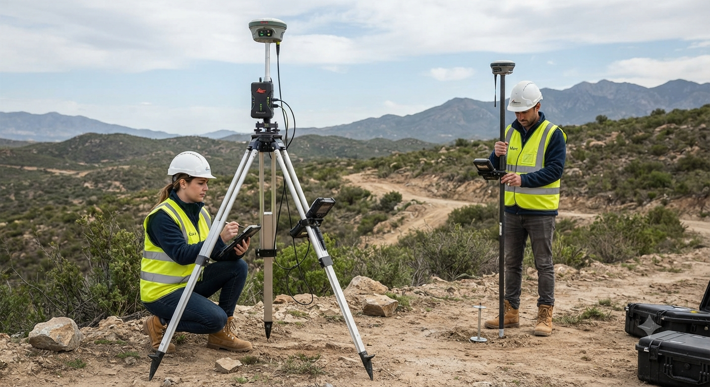
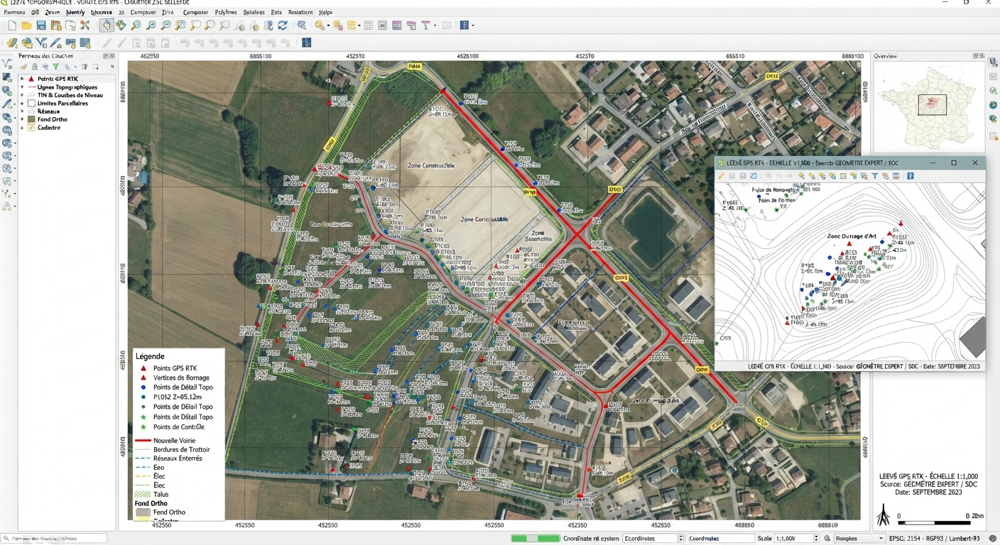
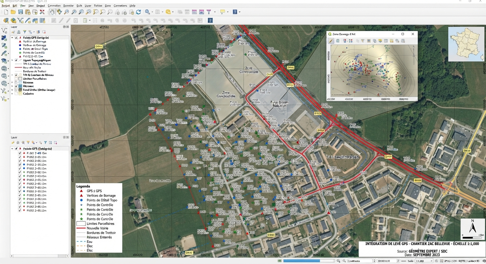

Des mesures de terrain fiables sont le socle de tout projet d'aménagement : la topographie garantit une donnée de position juste, avant toute décision.
Chaque levé est réalisé avec du matériel professionnel calibré et rattaché aux référentiels géodésiques officiels, quelle que soit l'échelle du projet.
Les données brutes sont ensuite contrôlées, structurées et livrées dans le format attendu par votre bureau d'études, votre SIG ou votre collectivité.

Les campagnes de terrain s'appuient sur des équipements Trimble et un rattachement systématique au réseau géodésique national.

Un levé terrain prend toute sa valeur lorsqu'il est intégré durablement dans votre base de données géographique.

Décrivez votre terrain et vos délais, nous organisons l'intervention.